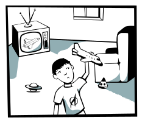
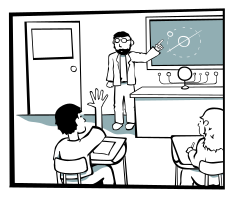
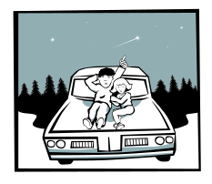
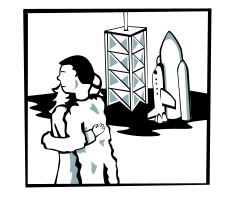
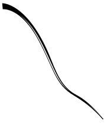
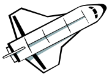

There once was a boy who wanted to be an astronaut. He was always interested in space and learned as much as he could. He shared his dream with all his friends. When he graduated at the top of his class, he knew he was that much closer to fulfilling his dream. He was hired by NASA and went through thorough training. Then, one day, his moment finally came.


I thought this would feel different...